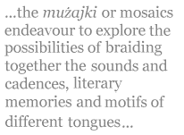
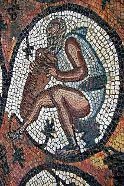

Run, rabbit, run, run, run, from the womb to the tomb,
de cuatro a dos a tres, del río a la mar,
play the fool, suffer school, żunżana ddur iddur,
engage-toi, perds ta foi, le regole imparar,
kul u sum, aħra u bul, chase the moon, meet your doom,
walk on ice, roll your dice, col destino danzar,
métro, boulot, dodo, titla’ x-xemx, terġa’ tqum,
decir siempre mañana y nunca mañanar,
try to fly, touch the sky, hit the stone, break a bone,
sell your soul for a loan to call those bricks your home,
fall in love, rise above, fall apart, stitch your heart,
che sarà? ça ira! plus rien de nous sera,
minn sodda għal sodda niġru tiġrija kontra l-baħħ,
sakemm tinbela’ ruħna mill-ġuf mudlam ta’ l-art.
C’est la vie
Run, rabbit, run, run, run, from the womb to the tomb, from four to two to three, from the river to the sea, play the fool, suffer school, the wasp goes round and round*, get involved, lose your faith, learn the rules,
eat and fast, shit and piss, chase the moon, meet your doom, walk on ice, roll your dice, with destiny dance, metro, work, sleep, the sun rises, you get up again, to say always tomorrow and never tomorrow reach,
try to fly, touch the sky, hit the stone, break a bone, sell your soul for a loan to call those bricks your home, fall in love, rise above, fall apart, stitch your heart,
what will be? it will go well, nothing more of us will be, from bed to bed we run a race against the void, until our soul is swallowed by the dark womb of the land.
* the name of a Maltese children’s game
White Knight Syndrome
Ribussa ai miei pensieri un desiderio d’ieri,
chagrin malin d’amour, a cold and burning bliss,
mil noches sin dormir, il sogno in cui non c’eri,
u f’qalbi llejla jriegħed, niftakar f’ħarstek biss ...
ancor, l’andirivieni di lunghi lunghi treni,
elf ilment, mein Herz brennt, hombre de traje gris,
fil-bla tmiem ta’ għajnejk is-seħer tal-misterji
kollha ta’ l-univers, and more, much more than this ...
enough, c’est fou, rien plus, c’est tout, now let it be,
daqshekk, basta così, ir-riħ li ’l bogħod ġie jtajrek
illejla niżżih ħajr, ô belle dame sans merci;
għada jisbaħ ukoll, u nisbaħ jien mingħajrek,
je change dame et cheval, je change de chevalier,
niente più niente al mondo se penso solo a te.
White Knight Syndrome
Knocking on the door of my thoughts comes a desire from yesterday, malign grief of love, a cold and burning bliss, a thousand sleepless nights, the dream where you were not, and in my heart tonight it thunders, as I remember no more than your look...
once more, the coming and going of long long trains, a thousand moans, my heart burns, man in a grey suit, in the endlessness of your eyes the spell of every mystery of the universe, and more, much more than this...
enough, this is mad, no more, that’s it, now let it be, it’s over, that will do, the wind that came to blow you far away tonight I thank, oh merciless fair maiden;
tomorrow will also dawn, and I will dawn without you, I change maiden and horse, I change the knight, nothing plus nothing in the world if I think only of you.
A Dunánál
Talán Budapest ég. Tal vez se iluminaron
de poniente las calles. Perhaps the crats who freed her
now besiege her with colour, b'rebbiegħa dejjem ġdida...
Ah, дорогой товарищ ! Vigyázz — egy, kettő, három,
Semmi. Mennyi? Jobb áron: peasant blood by the gallon,
húzni, tolni, öffnen, schließen, west to east and back, ida
y vuelta, cual muelle en manos de un niño fratricida…
És a Duna csak folyt, like the river of Charon.
O tempora, o mores! La ciudad de las flores
vendió su alma al dólar, her charm for neon furniture;
thus I, tourist of tongues, catador de amores,
bête en quête de beauté, verssorok őrült koldusa,
minn tarf il-pont imkisser inbul biex nara ddub
my tingling western shame in the kidney-brown Danube.
[I am grateful to Geza Varga for his linguistic assistance.]
A Dunánál
Perhaps Budapest is burning. Perhaps the streets have been lit up with sunset. Perhaps the crats who freed her now besiege her with colour, with a spring forever new… Ah, dear comrade! Beware — one, two, three,
Nothing. How much? A better price: peasant blood by the gallon, pull, push, open, close, west to east and back, gone and returned, like a spring in the hands of a fratricide child… And the Danube simply flowed, like the river of Charon.
Oh the times, oh the manners! The city of flowers has sold her soul to the dollar, her charm for neon furniture;
thus I, tourist of tongues, taster of loves, beast in search of beauty, mad beggar of lines of verse,
from the end of the broken bridge I piss in order to watch melt my tingling western shame in the kidney-brown Danube.
About the Mosaic concept
Mużajk is an experiment in multilingual verse, an attempt to combine the sounds of different languages into a single rhythm and a single thought.
Written in a blend of English, French, Italian, Maltese and Spanish (in no particular order or proportion), but occasionally also peppered with phrases from other languages, the mużajki or mosaics endeavour to explore the possibilities of braiding together the sounds and cadences, literary memories and motifs of different tongues. The successful interaction of the various elements will depend on how well the seemingly multiple voices are gelled into one by the rhythm and logic of the poem. The rigid but versatile form of the sonnet, together with the flexible verse of the alexandrine, aim to help achieve a tightly-knit structure of a musical and perhaps even natural-sounding quality.
Despite this technical, somewhat postmodernist description, the mosaics are more than a mere linguistic challenge. Having lived in five different European countries and languages, I find it difficult to decide which tongue I feel more at home with. Although I still write monolingual poetry occasionally (particularly in Maltese), I believe that selecting one, or even two, would mean sacrificing others, and to a certain extent, I feel that making a choice would also imply a political decision. Why the fixation with one as opposed to many? In a review of Hbula Stirati (Tightropes), an anthology of poetry published in Malta in July 2007 containing the first set of mosaics, a veteran Maltese poet asks whether the mosaics are the zealous attempt of a poet-linguist to break down the insular walls of the Maltese language in order to broaden his audience, or whether the poems aspire beyond the immediate demands of recognition and consumption and look more to transcend the slavery imposed ipso facto by the regime of “a single language” on the free spirit of the poet. The first supposition is not entirely false, but I feel the second to be more accurate. The mosaics might be considered as an expression of a fragmented identity, but perhaps also as a humble yet audacious manifesto taking unity in diversity another little step forward, towards a poetry which is at once local and supranational. Nevertheless, I am convinced that this will depend more on the content of the poems than on the mere form.
The name mosaic refers not only to the balanced panaché of languages but also to the way the poems are written — each utterance being a fragment of a different shape, colour or taste — and to the frame itself, the sonnet being a rectangular form requiring density, concision and logical distribution of thought. The themes of the mosaic, as of the sonnet throughout its long, celebrated history across languages and literatures, are also diverse. Solitude and the joy of being plural, the pleasure and futility of modern life, love unrequited or fulfilled, desire for simplicity in an ever-increasingly complicated world, the beauty of the Mediterranean, the existential compulsion to write, and the at once exhilarating and disorienting feeling of variety itself, are among some of the main preoccupations.
Whilst C’est la vie and White Knight Syndrome are composed in the five languages mentioned above, A Dunánál is part of a second phase of the development of the mosaic, where I have begun to experiment with tongues outside those I know and live in, by including what could be called a “guest language” related to the subject of the poem. In this case, Hungarian words and phrases taken from a poem of the same name by Attila József and from signs in the street are used to transmit a brooding impression of modern-day Budapest, with the necessary dose of cynicism, the city appearing to have been transformed into a giant advertising space. Having said this, one would not be wrong to accuse the mosaics of being “eurocentric” — I have only experimented with European languages so far. To this I can only reply that in form, content and scope, the mosaic is still taking infant steps.
More so than to be placed pleasingly on the page and to be read, the mosaics are composed to be performed and heard. For this reason, an audio recording is offered with each poem. After all, as Borges and other poets have repeated on different occasions, poetry aspires to the condition of music. This does not necessarily imply that the use of metrical form should be compulsory in the writing of poetry, but I believe the patterning of language in general is essential for a poem to be recognised as such. And as "formalists" (I am shy to use this term) know well, rhyme and rhythm often open the doors to wild, unexpected and unpredictable associations, which we should not cease to explore, and which can create even more wonder when given voice.
Born in London to Maltese parents in 1978, Antoine Cassar grew up and studied in England, Malta, Italy and Spain. He is currently completing a PhD thesis on the origins of the sonnet. He now lives in Luxembourg, where he works as a translator into Maltese.
Other Mosaic sonnets can be found on his website at http://muzajk.info/.